| ・英語口頭発表準備02 (H26.06.13) | |||
先週から1週間。今日は修士全員からのスライドチェックと質問攻めの日。自分の間違えは気付かないけれど、人の間違いだけは見逃さないモノ。あと、研究分野が違っても論理展開の整合性が変だと気付きます。なによりお互い遠慮が無いので本番よりキツイやり取りになります。 |
|||
|
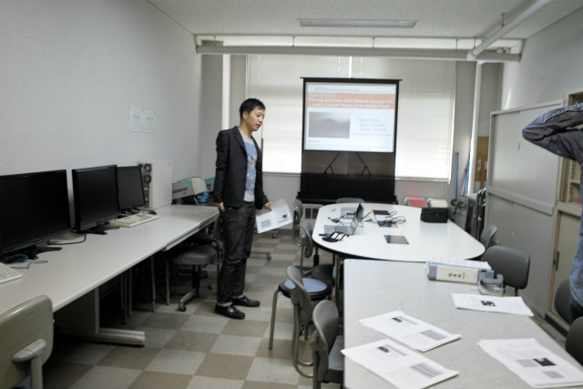
みんな来てくれるかな？ |
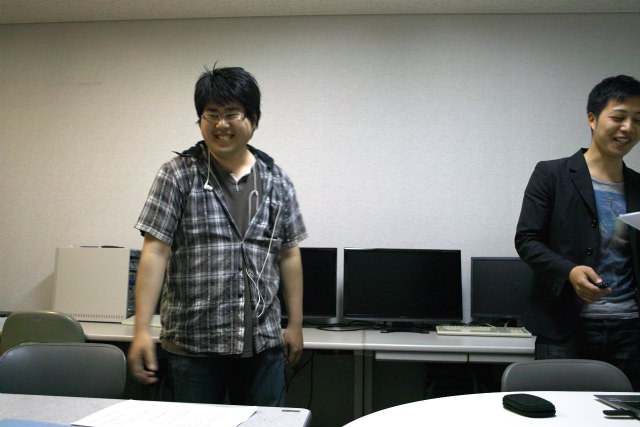
完全回復なムー君 | ||
|
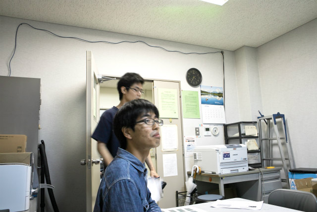
ShogoもK林くんも |
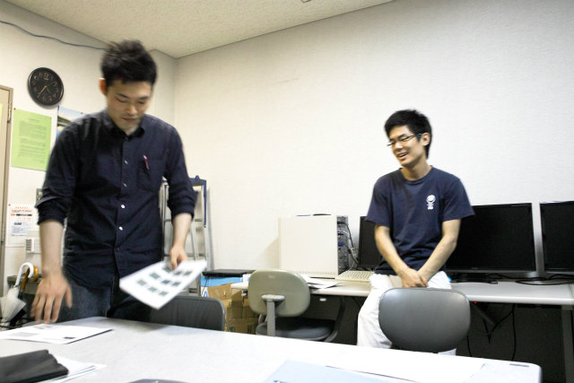
A井くんは先週から | ||
|
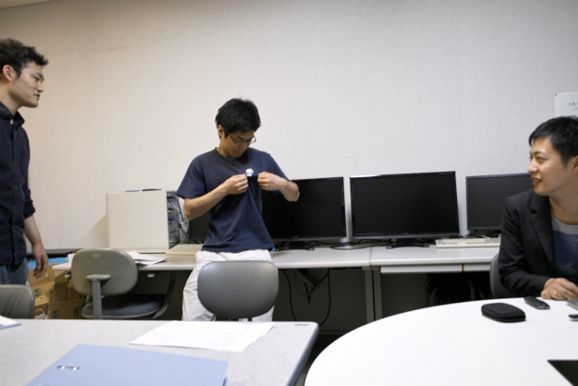
2004ってこれなんなん？ |
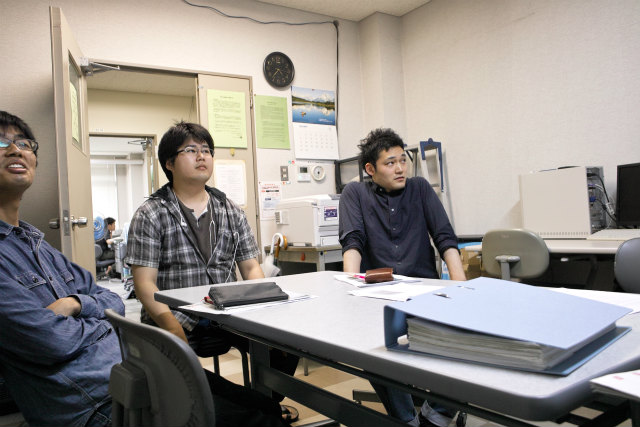
奥の方でtaskが | ||
|
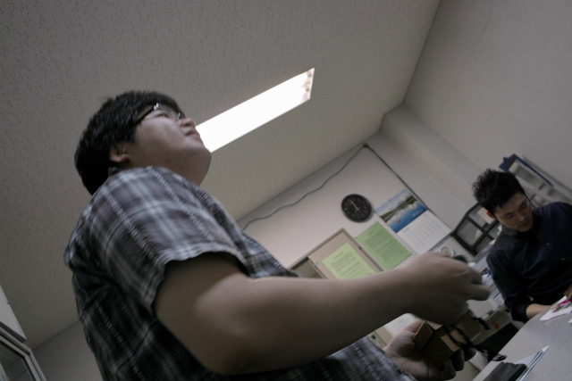
そろそろやろうぜ！ |
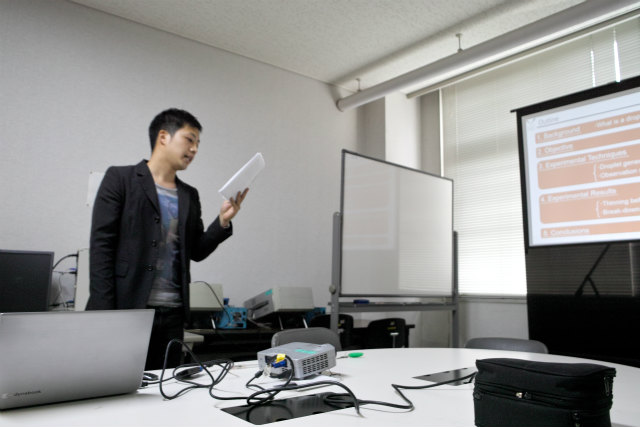
まだ憶えてません | ||
|
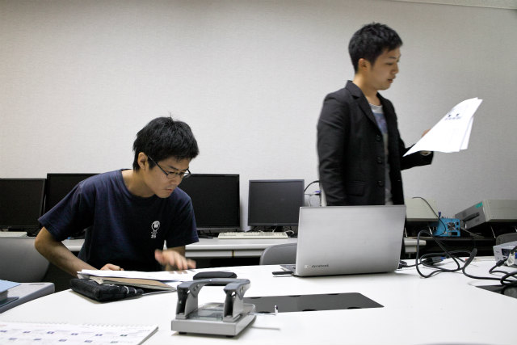
英語チェック |
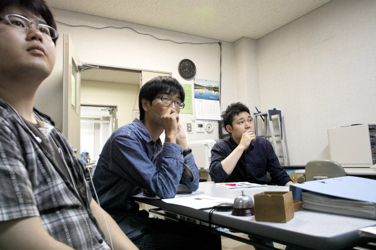
taskが奥の方で | ||
|
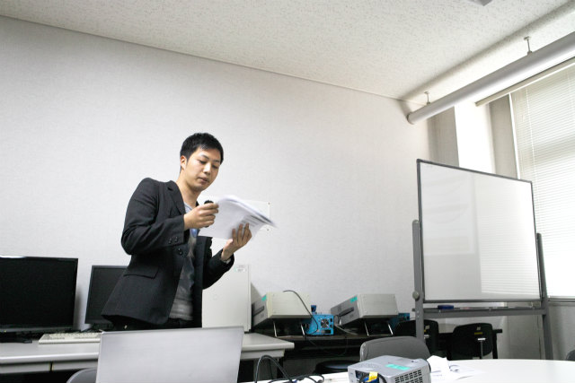
さて、一通り発表しました |
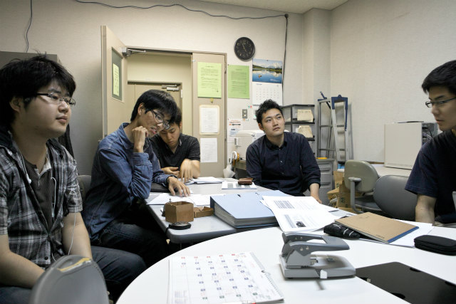
taskも来たし、最初のスライドから1枚ずつ行こう | ||
|
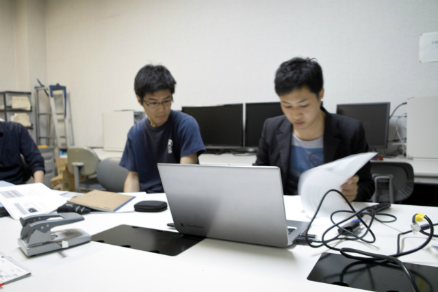
ちょっと待って！みんな一斉に指摘しすぎ！ |
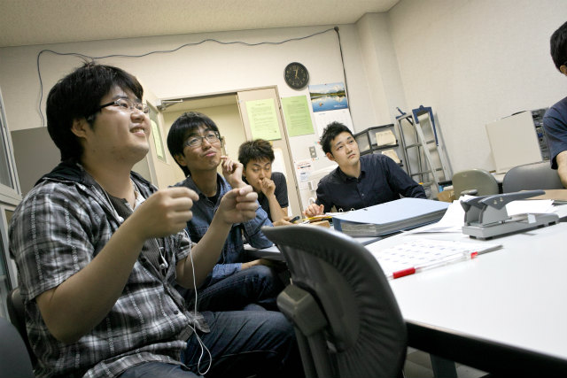
そしてみんなレイアウトには一家言ありでメンドくさい | ||
|
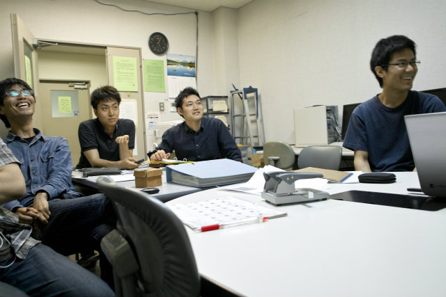
officeのスペルチェックよりキビシイtask |
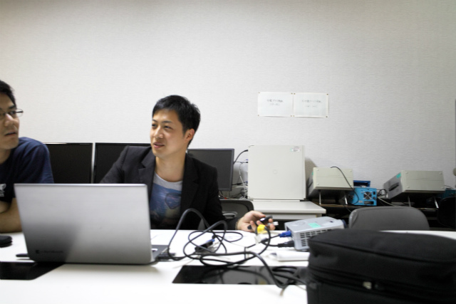
なんでそんなん気付くの？ | ||
|
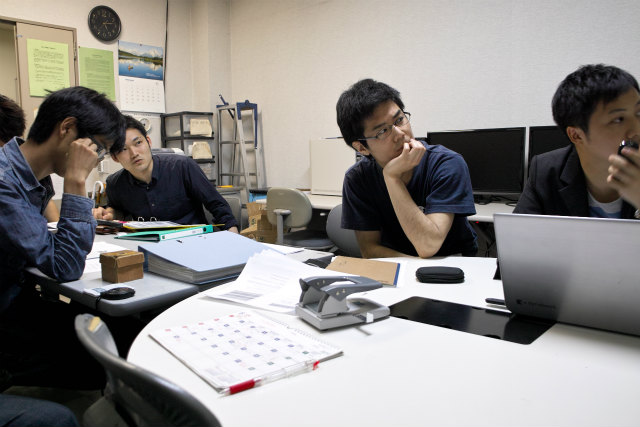
A井くんの指摘 |
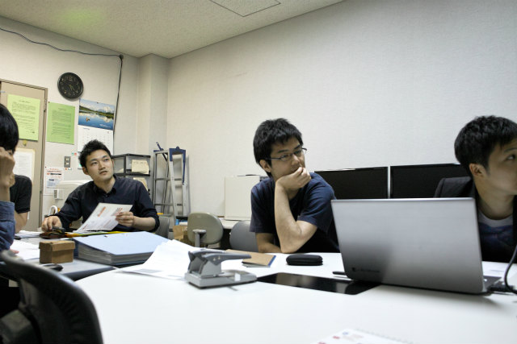
たくさん補足スライドは必要そうです | ||
|
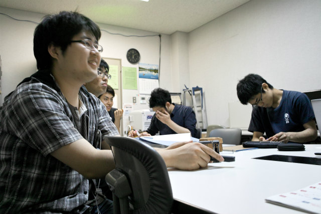
「まぁ質問こんけどな」とフラグを立てるムー君 |
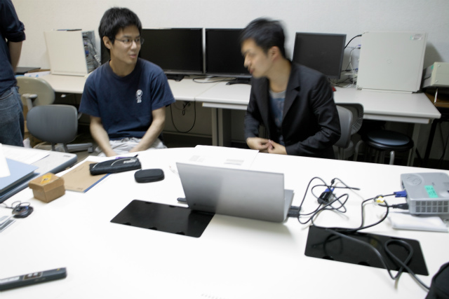
来週までにやること多いのな | ||